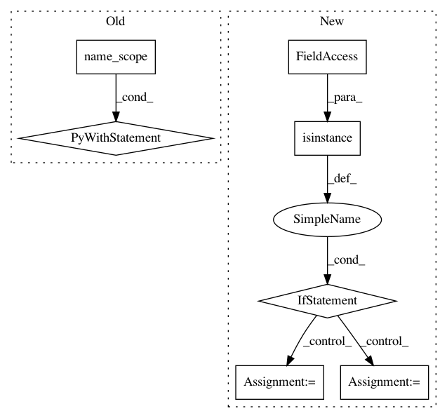

452cf41746dd7c4572b6e6766185431bce7f5ee1,tf_agents/networks/lstm_encoding_network.py,LSTMEncodingNetwork,call,#LSTMEncodingNetwork#Any#Any#Any#Any#,182
Before Change
network_state=(),
training=training)
with tf.name_scope("reset_mask"):
reset_mask = tf.equal(step_type, time_step.StepType.FIRST)
// Unroll over the time sequence.
state, network_state = self._dynamic_unroll(
state,
reset_mask,
initial_state=network_state,
After Change
training=training,
**network_kwargs)
if isinstance(self._lstm_network, dynamic_unroll_layer.DynamicUnroll):
state, network_state = output
else:
state = output[0]
network_state = tf.nest.pack_sequence_as(
self._lstm_network.cell.state_size, tf.nest.flatten(output[1:]))
for layer in self._output_encoder:
state = layer(state, training=training)
if not has_time_dim:
In pattern: SUPERPATTERN
Frequency: 3
Non-data size: 7
Instances
Project Name: tensorflow/agents
Commit Name: 452cf41746dd7c4572b6e6766185431bce7f5ee1
Time: 2020-05-01
Author: no-reply@google.com
File Name: tf_agents/networks/lstm_encoding_network.py
Class Name: LSTMEncodingNetwork
Method Name: call
Project Name: tensorflow/agents
Commit Name: 452cf41746dd7c4572b6e6766185431bce7f5ee1
Time: 2020-05-01
Author: no-reply@google.com
File Name: tf_agents/agents/ddpg/critic_rnn_network.py
Class Name: CriticRnnNetwork
Method Name: call
Project Name: tensorflow/transform
Commit Name: 998b0e8f1c3ec165fc1ca7b6421c96b1c72ec297
Time: 2018-05-30
Author: tf-transform-dev@google.com
File Name: tensorflow_transform/analyzers.py
Class Name: Analyzer
Method Name: __init__